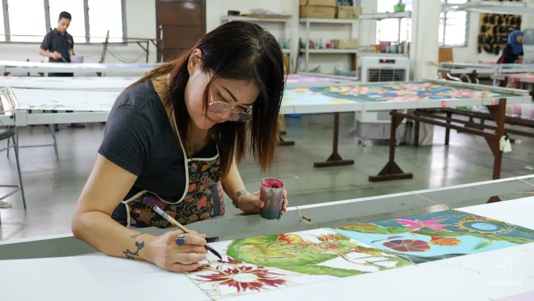

We work with rural and urban batik artisans across Malaysia to create batik textiles on natural fibres.This fabric is then sent to the seamstresses at our training centre to create products in designs that you'll love. Through this model, we are able to alter the circumstances of marginalised communities by providing employment opportunities, sustainable incomes, and skills to achieve financial independence. To date, we have worked with over 300 artisans and impacted the lives of more than 1,500 local beneficiaries. You can feel good knowing each purchase directly benefits the artisan who handcrafted the products and helps weave change in the lives of their families and communities.
Our batik will add bunch of aesthetic colors in your life!!